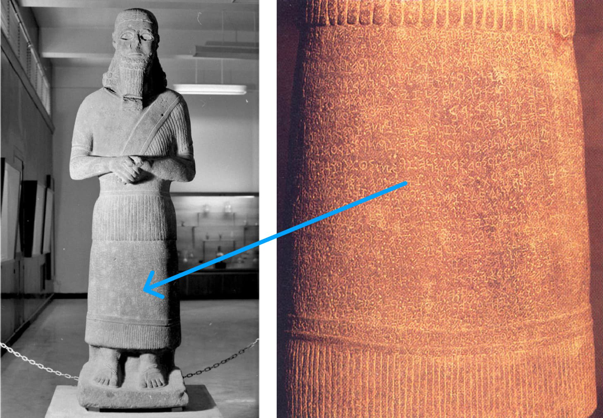
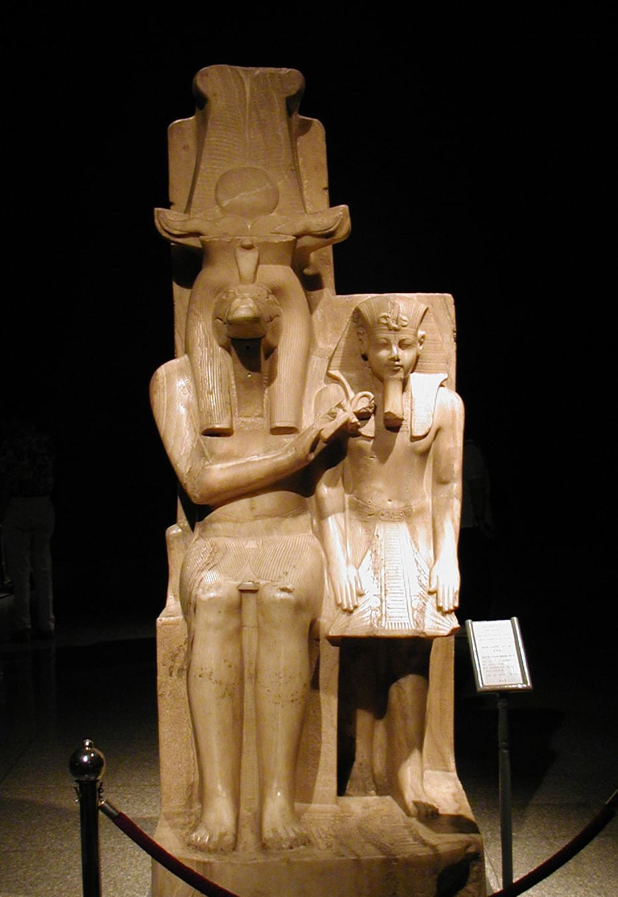
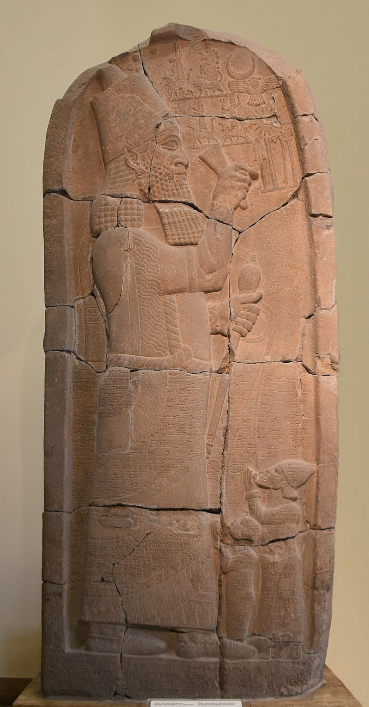
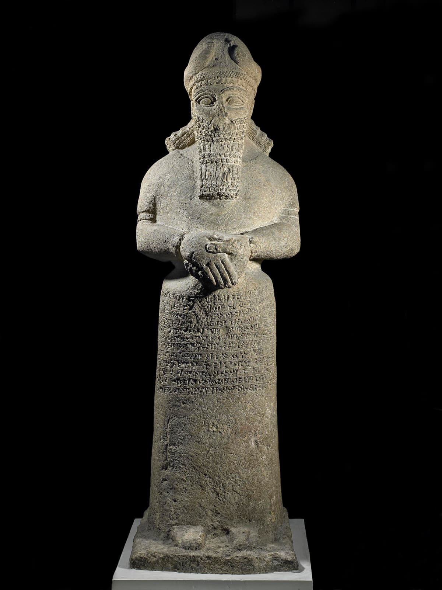

proibição da idolatria a sua mais forte justificativa possível: para os humanos fazerem um ídolo é tolice porque falha em apreciar que, de acordo com a ordem original da criação, é a humanidade que funciona em relação a Deus como fazem os ídolos em relação aos seus deuses.” Fletcher-Louis, Crispin (2004). “God’s Image, His Cosmic Temple, and the High Priest: Towards an Historical and Theological Account of the Incarnation.” Heaven on Earth: The Temple in Biblical Theology. Paternoster. 83-84. “[E]sta imagem unificadora na humanidade tem uma função sacramental bem como essencialmente corporal: os seres Adão são ícones animados … o propósito peculiar da sua criação é a “teofania”: representar ou mediar a presença soberana da divindade dentro da nave central do templo cósmico, assim como as imagens de culto deviam fazer em santuários convencionais. [Isto significa que] a humanidade é uma espécie inerentemente ambivalente, cuja ... existência confunde, por design, a distinção de outra forma nítida entre criador e criação.” McBride, Sean Dean (2000). “Divine Protocol: Genesis 1:1-2:3 as Prologue to the Pentateuch.” God Who Creates. Eerdmans. 16-17. A Imagem de Deus = A Humanidade como Imagem Real de Deus Como observado acima, o propósito da nomeação da humanidade como a imagem divina é o domínio real sobre a criação. Em Gênesis 1, é claro que só Deus tem o domínio e poder únicos sobre o nada caótico, e só ele pode falar a realidade para uma existência ordenada. Mas agora, a humanidade é nomeada como o governante delegado de Deus e uma imagem física incorporada do domínio divino. “Assim como poderosos reis terrenos, para indicar a sua pretensão ao domínio, erguem uma imagem de si mesmos nas províncias do seu império onde eles não aparecem pessoalmente, assim os humanos são colocados na terra à imagem de Deus como o emblema soberano de Deus.” von Rad, Gerhard (1973). Genesis: A Commentary (Old Testament Library). John Knox Press. 60. “[Em Gênesis 1] a imago Dei refere-se ao governo humano, isto é, um exercício de poder em nome de Deus na criação … Esta delegação, ou partilha, do governo de Deus sugere que a imagem é “representativa,” designando o ofício responsável e a tarefa confiada à humanidade na administração do reino terreno em nome de Deus … [No entanto] o significado de “governar” vai muito além das nossas pré-compreensões hermenêuticas contemporâneas. A metáfora real … inclui integralmente sabedoria e construção artística. O Deus que governa a criação pela sua palavra autoritativa é também o artesão supremo que constrói uma estrutura cósmica complexa e habitável … Os humanos são chamados a imitar ou continuar a própria atividade criativa de Deus, povoando e organizando a terra restante não formada e não preenchida. Deus, em outras palavras, iniciou o processo de formar e preencher, que os humanos, como delegados terrenos de Deus, devem continuar.” Middleton, J. Richard (2005). The Liberating Image: The Imago Dei in Genesis 1. Baker Academic. 88-89.prohibition of idolatry its strongest possible rationale: for humans to make an idol is foolish because it fails to appreciate that according to the original order of creation, it is humanity that functions in relation to God as do the idols in relation to their gods.” Fletcher-Louis, Crispin (2004). “God’s Image, His Cosmic Temple, and the High Priest: Towards an Historical and Theological Account of the Incarnation.” Heaven on Earth: The Temple in Biblical Theology. Paternoster. 83-84. “[T]his unifying image in humankind has a sacramental as well as an essentially corporal function: Adam beings are animate icons … the peculiar purpose for their creation is “theophani”: to represent or mediate the sovereign presence of the deity within the central nave of the cosmic temple, just as cult-images were supposed to do in conventional sanctuaries. [This means that] humanity is an inherently ambivalent species, whose ... existence blurs, by design, the otherwise sharp distinction between creator and creation.” McBride, Sean Dean (2000). “Divine Protocol: Genesis 1:1-2:3 as Prologue to the Pentateuch.” God Who Creates. Eerdmans. 16-17. The Image of God = Humanity as God’s Royal Image As noted above, the purpose of humanity’s appointment as the divine image is royal rule over creation. In Genesis 1, it is clear that God alone has the unique mastery and power over the chaotic nothingness, and he alone can speak reality into an ordered existence. But now, humanity is appointed as God’s delegated ruler and an embodied physical image of the divine rule. “Just as powerful earthly kings, to indicate their claim to dominion, erect an image of themselves in the provinces of their empire where they do not personally appear, so humans are placed on the earth in God’s image as God’s sovereign emblem.” von Rad, Gerhard (1973). Genesis: A Commentary (Old Testament Library). John Knox Press. 60. “[In Genesis 1] the imago Dei refers to human rule, that is, an exercise of power on God’s behalf in creation … This delegation of, or sharing in, God’s rule suggests the image is “representative,” designating the responsible office and task entrusted to humanity in administering the earthly realm on God’s behalf … [However] the meaning of “rule” goes well beyond our contemporary hermeneutical preconceptions. The royal metaphor … integrally includes wisdom and artful construction. The God who rules creation by his authoritative word is also the supreme artisan who constructs a complex and habitable cosmic structure … The humans are called to imitate or continue God’s own creative activity by populating and organizing the remaining unformed and unfilled earth. God has, in other words, started the process of forming and filling, which humans, as God’s earthly delegates, are to continue.” Middleton, J. Richard (2005). The Liberating Image: The Imago Dei in Genesis 1. Baker Academic. 88-89.
A estátua do rei sírio Hadad-iti (século IX a.C.) é dedicada a Adad (= Baal), o deus patrono da tempestade da Síria, e descrita precisamente na linguagem de Gênesis 1:26. A estátua do rei incorpora eThe statue of the Syrian king Hadad-iti (9th century B.C.E.) is dedicated to Adad (= Baal), the patron storm god of Syria, and described in precisely the language of Genesis 1:26. The statue of the king embodies and
representa a autoridade de Adad. Esquerda: Pitard, Wayne (2018). Vici. Direita: The BAS Library (1991)represents Adad’s authority. Left: Pitard, Wayne (2018). Vici. Right: The BAS Library (1991)
Ducher, Gerard (2006). Wikimedia CommonsDucher, Gerard (2006). Wikimedia Commons
Na ideologia real egípcia, o Faraó era chamado “a imagem de Rá” (Rá = a divindade do sol, chefe do panteão egípcio). O Faraó Ahmose I (1550-1525 a.C.) foi chamado “o príncipe de Rá, o filho de Qeb, o seu herdeiro, a imagem de Rá que ele criou, o representante, para quem ele se colocou na terra.” A rainha Hatepshepsut (1479-1457 a.C.) é descrita como “imagem soberba de Amon, a imagem de Amon na terra, a imagem de Amon-Rá para a eternidade, o seu monumento vivo na terra.” Amenhotep II (1427-1400 a.C.) foi intitulado “imagem de Rá,” ou “imagem de Hórus,” ou “santa imagem do senhor dos deuses.” Amenhotep III (1390-1352 a.C.) foi chamado por Amon “a minha imagem viva, criação dos meus membros, a quem Mut deu à luz para mim.” Para mais exemplos e discussão, veja David J.A. Clines, “The Image of God in Man,” Tyndale Bulletin, vol. 19. “Central a esta ideologia estava a divindade do faraó, pela qual ele era separado de todos os outros seres humanos ... [A] função central do rei era a sua função cultual, intermediária, de unir os reinos terreno e divino. Pensava-se que o faraó, num sentido bastante forte, era uma encarnação física, local, daIn Egyptian royal ideology, the Pharaoh was called “the image of Re” (Re = the sun deity, chief of the Egyptian pantheon). Pharaoh Ahmose I (1550-1525 B.C.E.) was called “the prince of Re, the child of Qeb, his heir, the image of Re whom he created, the representative, for whom he has set himself on earth.” Queen Hatepshepsut (1479-1457 B.C.E.) is described as “superb image of Amon, the image of Amon on earth, the image of Amon-Re to eternity, his living monument on earth.” Amenhotep II (1427-1400 B.C.E.) was titled “image of Re,” or “image of Horus,” or “holy image of the lord of gods.” Amenhotep III (1390-1352 B.C.E.) was called by Amon “my living image, creation of my members, whom Mut bore for me.” For more examples and discussion, see David J.A. Clines, “The Image of God in Man,” Tyndale Bulletin, vol. 19. “Central to this ideology was the divinity of the pharaoh, by which he was set apart from all other human beings ... [T]he central function of the king was his cultic, intermediary function of uniting the earthly and divine realms. The pharaoh was thought, in a fairly strong sense, to be a physical, local, incarnation of the
divindade, análoga à de uma estátua de culto ou imagem de um deus, que também é tal encarnação ... O rei ... era um lugar onde o deus se manifestava e era um meio primário pelo qual a divindade atuava na terra.” Middleton, J. Richard (2005). The Liberating Image: The Imago Dei in Genesis 1. Baker Academic. 109-110.deity, analogous to that of a cult statue or image of a god, which is also such an incarnation ... The king ... was a place where the god manifested himself and was a primary means by which the deity worked on earth.” Middleton, J. Richard (2005). The Liberating Image: The Imago Dei in Genesis 1. Baker Academic. 109-110.
Mortel, Richard (2020). Wikimedia CommonsMortel, Richard (2020). Wikimedia Commons
Uma carta de Adad-shumu-usur, o astrólogo da corte no reinado do rei assírio Esarhaddon (670s a.C.) diz: “O rei, o senhor do mundo, é a própria imagem de Shamash.” Outra carta de Adad-shumu-usur a Esarhaddon, onde ele descreve tanto o rei como o seu falecido pai, diz: “O pai do rei, meu senhor, era a própria imagem de Bel, e o rei, meu senhor, é igualmente a própria imagem de Bel.” Isto é discutido em Simo Parpola's Letters from Assyrian and Babylonian Scholars, cartas #196 e #228. The Trustees of the British Museum (2023). (CC BY-NC-SA 4.0) British Museum.A letter from Adad-shumu-usur, the court astrologer in the reign of Assyrian king Esarhaddon (670s B.C.E.) says, “The king, the lord of the world, is the very image of Shamash.” Another letter from Adad-shumu-usur to Esarhaddon, where he describes both the king and his late father, says, “The father of the king, my lord, was the very image of Bel, and the king, my lord, is likewise the very image of Bel.” This is discussed in Simo Parpola's Letters from Assyrian and Babylonian Scholars, letters #196 and #228. The Trustees of the British Museum (2023). (CC BY-NC-SA 4.0) British Museum.
“[Na ideologia real antiga,] o rei é a imagem do deus. Esta similaridade funcional amplamente atestada entre o rei e o deus na Mesopotâmia, pela qual o rei representa o deus em virtude do seu ofício real e é retratado agindo como o deus em maneiras específicas, fornece o pano de fundo necessário para entender as descrições do rei como a imagem de um deus ... [Isto] fornece o conjunto de paralelos mais plausível para interpretar a imago Dei em Gênesis 1 … A humanidade é dignificada com um status e papel … que é análogo ao status e papel dos reis no antigo Oriente Próximo. O capítulo 1 de Gênesis ... constitui assim uma genuína democratização da ideologia real do antigo Oriente Próximo. Como imago Dei, a humanidade é chamada a ser a representante e intermediária do poder e bênção de Deus na terra.” Middleton, J. Richard (2005). The Liberating Image: The Imago Dei in Genesis 1. Baker Academic. 121.“[In ancient royal ideology,] the king is the image of the god. This widely attested functional similarity between the king and god in Mesopotamia, whereby the king represents the god by virtue of his royal office and is portrayed as acting like the god in specific ways, provides the necessary background for understanding the descriptions of the king as the image of a god ... [This] provides the most plausible set of parallels for interpreting the imago Dei in Genesis 1 … Humanity is dignified with a status and role … that is analogous to the status and role of kings in the ancient Near East. Genesis chapter 1 ... thus constitutes a genuine democratization of ancient Near Eastern royal ideology. As imago Dei, humanity is called to be the representative and intermediary of God’s power and blessing on earth.” Middleton, J. Richard (2005). The Liberating Image: The Imago Dei in Genesis 1. Baker Academic. 121.
Na cultura mesopotâmica, estátuas dos deuses passavam por rituais chamados mîs-pî (“lavagem da boca”) e pît-pî (“abertura da boca”) acompanhados por encantações rituais e bênçãos, nos quais a presença das divindades se tornava uma só com a estátua. “Estas estátuas, tendo passado pelos rituais de purificação, carregamento e ativação, eram então efetivamente consideradas como sendo o deus ... Depois da cerimônia, a estátua que se tinha tornado um deus não era mais referida como uma “imagem.” Em vez disso, era referida pelo nome do deus ou deusa representado. Era vestida, alimentada e limpa diariamente, como se estivesse viva. ... [Através] desta transformação ritual, a imagem não “representava” mas era na verdade uma manifestação do sujeito representado. A imagem na antiga Mesopotâmia não deve ser conceituada como uma mera estátua ou monumento, porque concepções modernas de retrato são muitas vezes anexadas a essas ideias. A antiga ‘imagem’ (hebraico tselem / acadiano tsalmu) não é uma “réplica” … depois do ritual de transformação a imagem se torna uma extensão ou manifestação do referente.” Herring, Stephen. (2008). “A ‘Transubstantiated’ Humanity: The Relationship Between Divine Image and the Presence of God in Genesis 1:26-28.” Vetus Testamentum, Vol. 58. Brill. 483, 485, 488-489. Isto lança luz importante sobre as duas passagens sobre a tarefa divina da humanidade em Gênesis 1 e 2.In Mesopotamian culture, statues of the gods underwent rituals called mîs-pî (“mouth washing”) and pît-pî (“mouth opening”) accompanied by ritual incantations and blessings, in which the deities’ presence became one with the statue. “These statues, having gone through the purification, charging, and activating rituals, were then effectively considered to be the god ... After the ceremony, the statue which had become a god was no longer referred to as an “image.” Instead, it was referred to by the name of the god or goddess represented. It was clothed, fed, and cleaned on a daily basis, as if it were alive. ... [Through] this ritual transformation, the image did not “stand for” but actually was a manifestation of the subject represented. The image in ancient Mesopotamia should not be conceptualized as a mere statue or monument, because modern conceptions of portraiture are too often attached to those ideas. The ancient ‘image’ (Hebrew tselem / Akkadian tsalmu) is not a “replica” … after the transformation ritual the image becomes and extension or manifestation of the referent.” Herring, Stephen. (2008). “A ‘Transubstantiated’ Humanity: The Relationship Between Divine Image and the Presence of God in Genesis 1:26-28.” Vetus Testamentum, Vol. 58. Brill. 483, 485, 488-489. This sheds important light on the two passages about humanity’s divine task in Genesis 1 and 2.
Em Gênesis 1, Deus cria e nomeia uma imagem humana e depois pronuncia uma bênção ritual sobre a imagem enquanto eles são comissionados. Isto é modelado após os rituais de transformação das estátuas mesopotâmicas. Em Gênesis 2, note o foco na transformação de uma estátua de barro (“formou” é uma palavra hebraica padrão para a fabricação de barro) em um “ser vivente” por meio do sopro divino. Isto é seguido por uma comissão da estátua animada para trabalhar nos recintos sacerdotais do jardim. Este retrato dos humanos como imagens divinas e reais de Yahweh é precisamente a afirmação do Salmo 8, que é o produto de uma meditação sustentada sobre Gênesis 1 e 2.In Genesis 1, God creates and appoints a human image and then pronounces a ritual blessing over the image as they are commissioned. This is modeled after the transformation rituals of Mesopotamian statues. In Genesis 2, notice the focus on the transformation of a clay statue (“formed” is a standard Hebrew word for clay manufacture) into a “living being” by means of divine breath. This is followed by a commission of the animated statue to work in the priestly precincts of the garden. This portrait of humans as divine and royal images of Yahweh is precisely the claim of Psalm 8, which is the product of a sustained meditation on Genesis 1 and 2.
1 Ó Yahweh, nosso SENHOR, quão majestoso é o teu nome em toda a terra,1 O Yahweh, our LORD, how majestic is your name in all the land,
Tu que exibiste o teu esplendor acima dos céus !You who have displayed your splendor above the skies !
2 Da boca de crianças e lactentes estabeleceste força por causa dos teus adversários, para fazer cessar o inimigo e o vingativo.2 From the mouth of infants and nursing babies You have established strength because of your adversaries, to make the enemy and revengeful cease.
3 Quando considero os teus céus, a obra dos teus dedos, a lua e as estrelas, que estabeleceste,3 When I consider your skies, the works of your fingers, the moon and the stars, which You have established,
4 que é o humano para que te lembres dele, e o filho do humano para que cuides dele?4 what is human that you remember him, and the son of human that you care for him?
5 No entanto, Tu o fizeste um pouco menor do que os elohim, contudo com glória e majestade o coroaste! 6 Tu o fizeste governante sobre as obras das tuas mãos ; puseste todas as coisas debaixo dos seus pés5 Yet You have made him a little lower than elohim, yet with glory and majesty you have crowned him! 6 You made him a ruler over the works of your hands ; you have put all things under his feet
7 Todas as ovelhas e bois, e os animais do campo, 8 As aves dos céus e os peixes do mar, tudo o que passa pelas veredas dos mares.7 All sheep and oxen, and beasts of the field, 8 The birds of the heavens and the fish of the sea, whatever passes through the paths of the seas.
9 Ó Yahweh, nosso SENHOR, quão majestoso é o teu nome em toda a terra.9 O Yahweh, our LORD, how majestic is your name in all the land.
Salmos 8. Tradução e Design Literário por Tim Mackie para BibleProject Classroom: Heaven and Earth (2019).Psalm 8. Translation and Literary Design by Tim Mackie for BibleProject Classroom: Heaven and Earth (2019).




O que um ídolo deveria ser no mundo antigo, e como a humanidade deve funcionar como um ídolo, ou imagem, de Deus?What is an idol meant to be in the ancient world, and how is humanity to function like an idol, or image, of God?